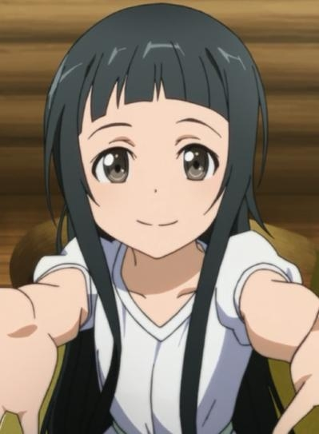

|
Seri |
- Children Who Chase Lost Voices
|
Seri is the sister of Shun and Shin. She is from Agartha. |
 |
Suzuka Kurihara |
- Fate/kaleid liner Primsa Illya
- Fate/kaleid liner Prisma Illya 2wei!
- Fate/kaleid liner Prisma Illya 2wei! OVA
- Fate/kaleid liner Prisma Illya 2wei Herz!
- Fate/kaleid liner Prisma Illya 2wei Herz! Specials
- Fate/kaleid liner Prisma Illya 3rei!!
- Fate/kaleid liner Prisma Illya 3rei!! Specials
|
Suzuka Kurihara is one of Illya's friends. She one of the smarter one of Illya group. |
|  |
Yui |
- Sword Art Online
- Sword Art Online: Sword Art Offline
- Sword Art Online: Extra Edition
- Sword Art Online: Extra Edition - Sword Art Offline
- Sword Art Online II
- Sword Art Online II: Debriefing
- Sword Art Online II: Sword Art Offline
- Sword Art Online Movie: Ordinal Scale
|
Yui is an AI (Artificial Intelligence) found by Kirito and Asuna. She looks like a 10 year girl with long black hair. She is cheerful and helpful when Kirito and Asuna need it. |